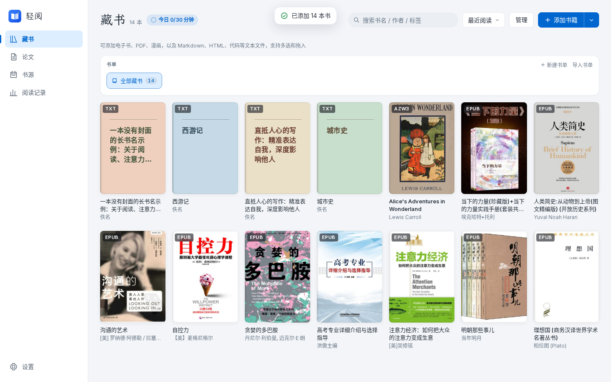
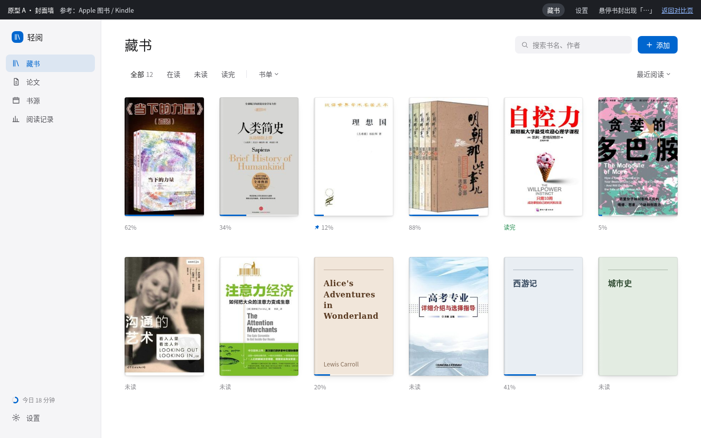
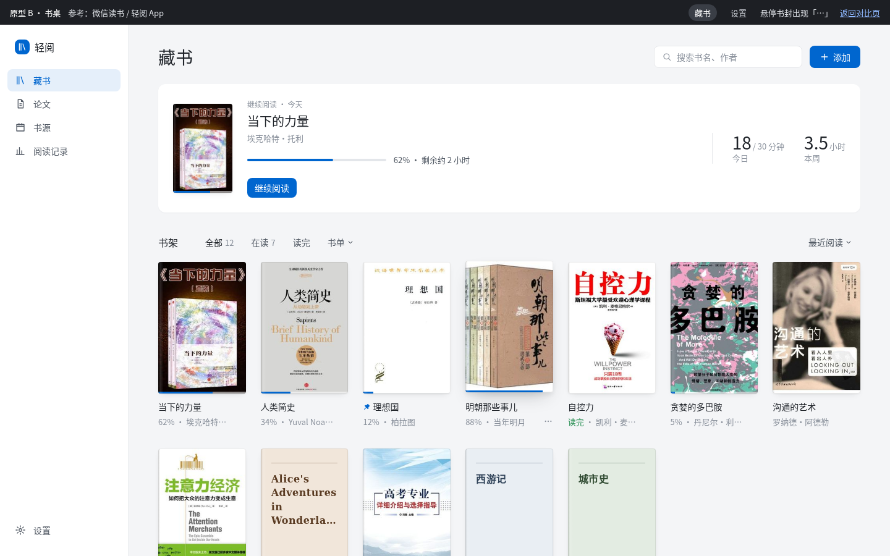
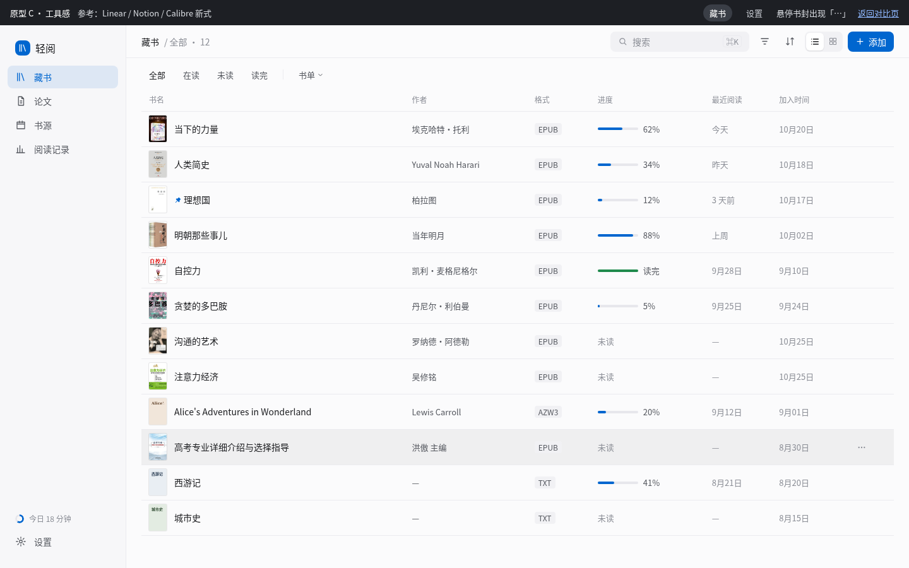
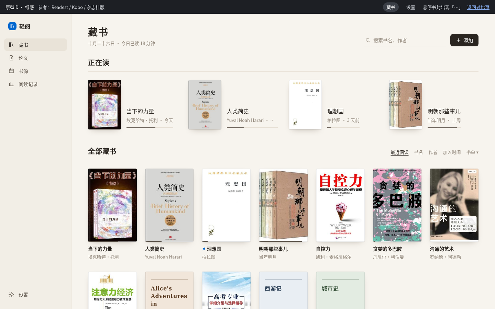

四个原型共用同一套收敛档位（字号 6 档 · 圆角 4 档 · 阴影 3 档 · 间距 4/8/12/16/24/32/48），只在风格和布局上不同。点卡片进入可交互原型，顶部黑条可切换「藏书 / 设置」。

格式标签常驻封面，悬停出 5 个按钮；页头三层（工具栏 / 说明 / 书单卡）。

最克制：书架只有封面。书名在封面上就能看到，下方只留进度和「⋯」。

与手机 App 同一套书卡（短书名 + 「进度 · 作者」）。顶部一张「继续阅读」，今日时长并入其中。

信息多但有序：默认列表视图，格式、大小、时间都进表格列，封面上一个字都不放。可切到网格。

温暖的纸色与衬线标题，按「正在读 / 全部」分区。留白最多，像一张安静的书桌。